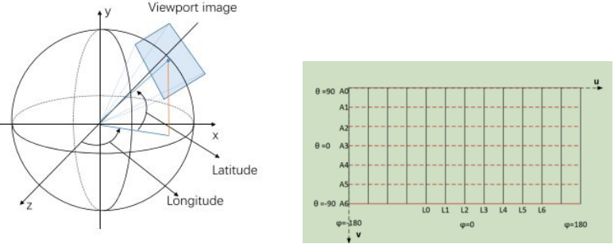
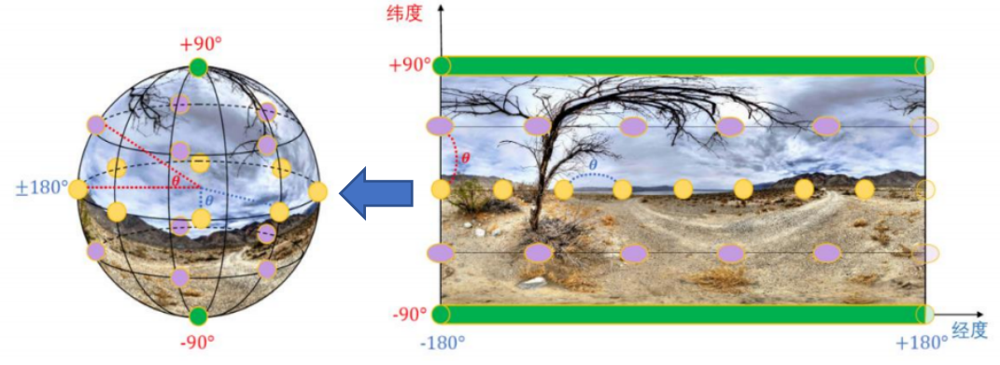
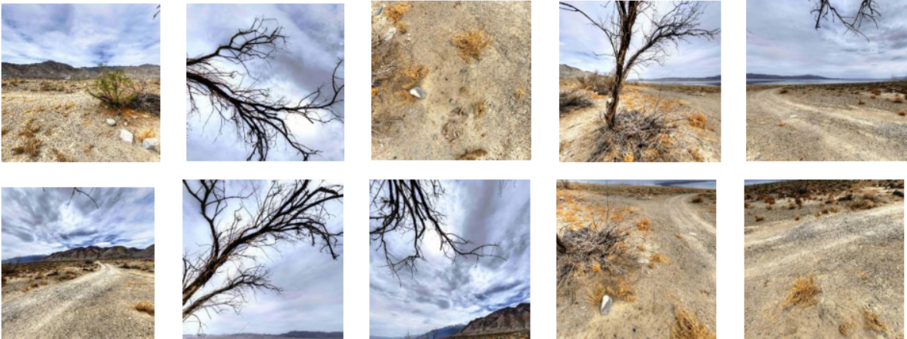

项目详情
全景图像质量评价算法研究
项目简介
通过设计主观实验，组织 16 名实验人员对 3200 个视口图像进行评分，构建质量评价数据集； 在此基础上提出加权多视口 CNN 算法，最终 SROCC 指标达到 0.9665。



技术栈
工具：PyTorch、Scikit-learn、NumPy、Matplotlib
语言：Python
主要职责
- 针对 OIQA 数据集设计视口提取算法，对每张全景图像提取 10 个视口，共形成 3200 张视口图像。
- 设计并组织 16 人参与的主观实验，记录评分结果并计算 MOS 值。
- 基于 ConvNeXt 预训练模型设计 10 个视口通道，并结合赤道理论设置通道权重进行训练和预测。